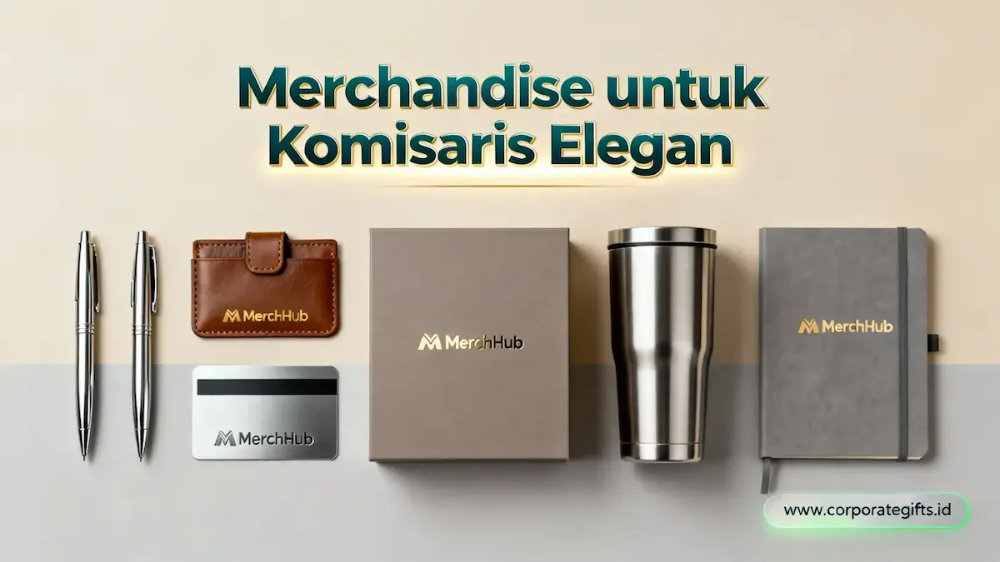

Corporate Gifts ID - Memberikan apresiasi kepada jajaran pimpinan tertinggi korporasi memerlukan pendekatan yang matang dan berkelas. Merchandise untuk komisaris merupakan kategori hadiah korporat premium yang dirancang khusus sebagai wujud penghargaan resmi atas arahan strategis, pengawasan tata kelola, dan kepemimpinan visioner. Pilihan hadiah ini mencakup alat tulis logam berkelas, aksesori berbahan kulit asli, perangkat teknologi eksekutif, hingga plakat kristal penghargaan dengan ukiran nama personal.
Setiap item cinderamata untuk dewan pengawas harus mampu merefleksikan wibawa, integritas, dan kehormatan jabatan penerimanya. Pemilihan material bermutu tinggi, ketelitian detail grafir, serta kemasan kotak kaku berlapis beludru menjadi pembeda utama yang menjadikan hadiah tersebut bernilai sejarah bagi sang komisaris.
Poin Kunci Merchandise Dewan Komisaris:
- Simbol Otoritas & Kehormatan: Bukan sekadar cinderamata seremonial, melainkan representasi penghargaan atas dedikasi pengawasan korporat.
- 4 Kategori Unggulan: Peralatan tulis bermaterial logam mulia, aksesori kulit asli, gadget eksekutif elegan, dan plakat kristal berdesain unik.
- Sentuhan Personalisasi Eksklusif: Grafir nama lengkap bergelar dan logo korporat meningkatkan ikatan emosional serta nilai prestise hadiah.
- Kemasan Hardbox Berlapis Satin: Membangun impresi kemewahan sejak pandangan pertama saat prosesi penyerahan resmi.
Mengapa Merchandise untuk Komisaris Berbeda dari Hadiah Karyawan Biasa?
Dewan komisaris memegang mandat pengawasan tertinggi dalam struktur tata kelola perusahaan (Good Corporate Governance). Mengingat peran strategis ini, pemberian souvenir atau merchandise perusahaan tidak dapat disamakan dengan pengadaan bingkisan massal untuk staf umum.
Tim Human Capital dan Procurement korporat perlu mengalokasikan anggaran khusus dengan standar kurasi yang ketat. Produk yang dipilih harus memiliki fungsionalitas eksekutif, daya tahan bertahun-tahun, serta nilai estetika yang pantas bersanding di ruang kerja pimpinan utama.
4 Kategori Merchandise Eksekutif yang Cocok untuk Komisaris
Berikut adalah empat kelompok produk paling prestisius yang selalu menjadi pilihan utama bagi dewan komisaris:
1. Peralatan Tulis Premium (Executive Writing Instruments)
Pena logam eksekutif dengan sentuhan akhir gold plating atau matte black merupakan simbol ketegasan tanda tangan pimpinan. Dilengkapi grafir laser nama penerima, pena ini menjadi instrumen kerja harian yang sangat dihargai. Padukan dengan agenda cover kulit beremboss logo instansi untuk paket hadiah yang sempurna.
2. Aksesori Kulit Fungsional (Genuine Leather Accessories)
Card holder berbahan kulit sapi asli, dompet paspor eksekutif, dan map folio dokumen berdesain minimalis menghadirkan aura kemapanan. Pilihan warna netral seperti midnight black, dark cognac, atau navy blue menciptakan impresi formal yang anggun saat dibawa menghadiri pertemuan dewan direksi.
3. Perangkat Eksekutif Modern (Smart Gadgets)
Powerbank berbalut aluminium metalik ramping dengan fitur wireless fast charging serta USB flash drive bermaterial kristal kayu merefleksikan keterbukaan korporasi terhadap inovasi modern. Hadiah teknologi ini sangat menunjang aktivitas komisaris yang memiliki mobilitas tinggi.
4. Hadiah Apresiasi dan Pajangan (Prestigious Awards)
Plakat kristal optik 3D, miniatur landmark gedung kantor berbahan logam kuningan, atau jam meja beraksen marmer berfungsi sebagai simbol penghormatan abadi atas pencapaian target korporat jangka panjang.

Kombinasi paket gift set eksekutif: pulpen rollerball perak, card holder kulit cokelat, kartu identitas logam, tumbler termal stainless steel, dan notebook minimalis dalam kotak hardbox mewah.
Tabel Perbandingan Kategori Merchandise Komisaris, Momen, dan Kesan
Berikut rangkuman perbandingan empat kategori merchandise komisaris beserta momen penyerahan yang paling tepat:
| Kategori Produk | Momen yang Cocok | Level Personalisasi | Kesan yang Ditimbulkan |
|---|---|---|---|
| Peralatan Tulis Premium | Rapat tahunan, pelantikan direksi, penandatanganan MoU | Ukiran laser nama dan logo monogram | Otoritas, presisi, dan integritas kerja |
| Aksesori Kulit Fungsional | Kegiatan kerja harian eksekutif, perjalanan dinas | Emboss inisial nama dan logo perusahaan | Kemapanan, kepraktisan, dan estetika klasik |
| Perangkat Eksekutif Modern | Perayaan pencapaian korporat, tech briefing | Laser grafir logo institusi | Modernitas, efisiensi, dan wawasan masa depan |
| Hadiah Apresiasi & Pajangan | RUPS, pelepasan purna tugas, penghargaan khusus | Nama lengkap, masa bakti, logo 3D kristal | Penghormatan tertinggi dan kenangan abadi |
Mengapa Personalisasi Nama & Jabatan Menjadi Kunci Nilai Emosional Hadiah?
Personalisasi nama lengkap beserta gelar dan periode pengabdian mengubah cinderamata biasa menjadi sebuah artefak bernilai tinggi. Sentuhan personal menunjukkan bahwa manajemen mendedikasikan waktu dan pemikiran secara khusus untuk menghargai figur sang komisaris.
Teknik penamaan yang elegan seperti grafir laser mikro pada bodi logam atau cap timbul foil perak pada kulit asli menciptakan nuansa eksklusif yang tidak dapat dibeli di toko ritel umum.
Pentingnya Kemasan Hardbox Mewah untuk Merchandise Komisaris
Kemasan luar adalah hal pertama yang dilihat dan disentuh saat prosesi penyerahan cinderamata. Kotak kaku (rigid hardbox) bermagnet dengan lapisan dalam kain satin sutra atau busa EVA cetak presisi memberikan perlindungan maksimal sekaligus meningkatkan gengsi hadiah secara dramatis.
Peran Merchandise Eksekutif dalam Penguatan Citra dan Reputasi Perusahaan
Pemberian souvenir custom VIP untuk level komisaris bukan hanya seremonial tahunan, melainkan instrumen komunikasi citra korporat yang sangat strategis. Hadiah ini merefleksikan budaya apresiasi internal yang sehat, soliditas kepemimpinan, dan kematangan finansial perusahaan di mata para pemangku kepentingan (stakeholders).
Ingin merancang paket merchandise eksekutif custom untuk jajaran dewan komisaris Anda? Konsultasikan kebutuhan pengadaan bersama tim ahli CorporateGifts.ID untuk memperoleh rekomendasi katalog VIP, preview desain mockup 3D, dan penawaran harga vendor terbaik.